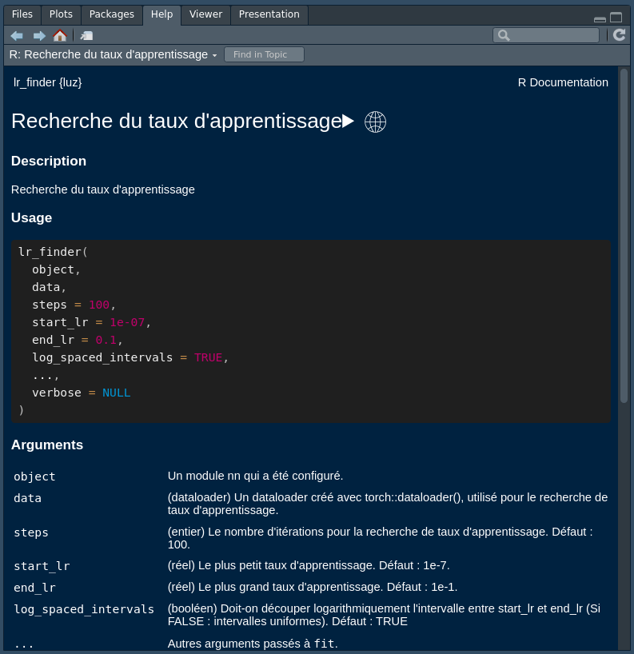

Le paquet d’internationalisation de {luz} en français (fr_FR)
Installation
Vous pouvez installer la version de development de {luz.fr} depuis GitHub via:
# install.packages("devtools")
devtools::install_github("cregouby/luz.fr")Exemple
Voici comment utiliser {luz} avec l’aide en français :
# configure la session en langue française
Sys.setenv(LANGUAGE = "fr")
# charge la librairie d'aide de luz en traduction française et {luz}
library(luz.fr)
library(luz)
# consulte l'aide normalement
??lr_finder

exemple de page de documentation en français dans l’onglet Help de RStudio